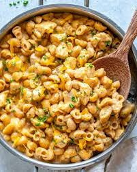

Protein Mac n Cheese

A delicious high protein Mac and Cheese
Ingredients
- 6 oz white cheddar cheese, shredded
- 2 oz skim mozzarella cheese, shredded
- 1/2 cup Greek yogurt
- 1/2 tsp paprika
- 1 tsp garlic powder
- pinch of salt and pepper, to taste
- 1/2 cup pasta water, reserved
Instructions
- Cook pasta according to package directions, until just al dente. Reserve ½ cup of pasta water and drain.
- Return the cooked and drained pasta to the pot it was cooked in. Place the pot on the stovetop over medium low heat.
- Add the shredded white cheddar, shredded mozzarella, greek yogurt, paprika, garlic powder, salt, pepper, and the reserved pasta water. Stir to combine until the cheese is melted and the ingredients are well combined, about 2 minutes.
- Serve hot with cooked chicken breast and bacon bits if desired!